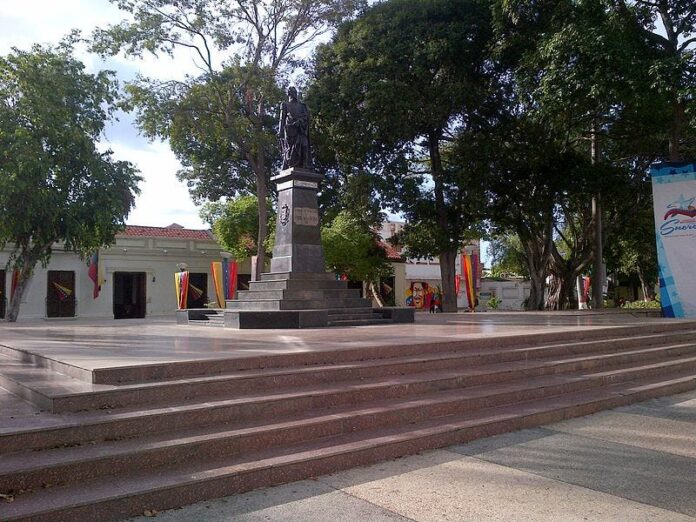

Sobre Nuestra Comunidad
La comunidad de Los Olivos es un lugar pacífico y agradable. Nos esforzamos por construir un futuro mejor para todos nuestros residentes, promoviendo la participación y el bienestar colectivo. Aquí, cada vecino es una parte fundamental de nuestro crecimiento.
Somos un conjunto de tres urbanizaciones que colaboran entre sí para lograr formar un entorno favorable para nuestros habitantes.
¿Dónde Estamos?
Nos ubicamos en la Av Cancamure, Parroquia Altagracia, Municipio Sucre.
Nuestro Aporte
Somos una comunidad que siempre está dispuesta a ayudar, tanto a personas que estén fuera como adentro. Procuramos siempre mantener el orden y la tranquilidad ante todo, sin molestar a nadie más.
También nos encargamos de recibir y distribuir las bolsas de comida entregadas por el CLAP y las bombonas de gas traídas por SucreGas.
Nos enorgullece nuestra cultura, nuestras tradiciones y la calidez de nuestra gente. Los Olivos es más que un lugar; es un hogar donde las familias crecen y los sueños se hacen realidad.